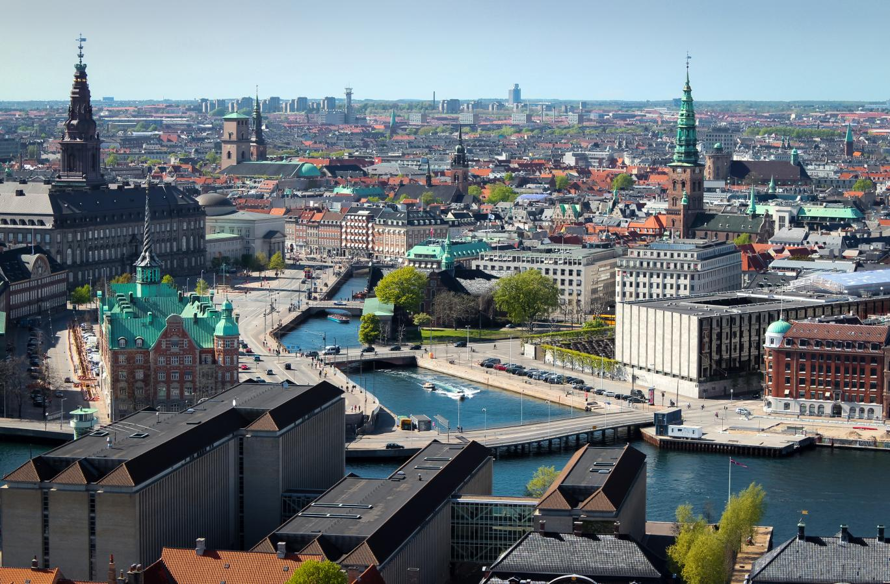
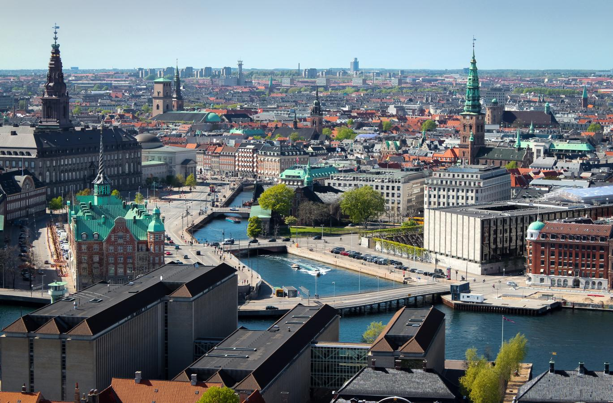

1. Τηλέφωνο & Δεδομένα
Το δίκτυο λειτουργεί κανονικά σα να ήσουν στην Ελλάδα
Το κινητό σου θα μπει αυτόματα σε Roaming, δηλαδή όλα ίδια απλά τα πακέτα θα έχουν μικρότερα όρια δεδομένων και λεπτών ομιλίας
Έλεγξε από πριν πόσα GB έχεις διαθέσιμα στο εξωτερικό με τα πακέτα που έχεις ήδη. Στις πληροφορίες αναφέρουν σε Roaming πόσο προσφέρουν.
Βάλε ~20€ να είσαι προετοιμασμένη ή για περίπτωση ανάγκης
2. Χρήματα & Πληρωμές
Νόμισμα: 1€ ≈ 11 SEK (Κορόνες)
Στη Σουηδία σχεδόν παντού πληρώνουν με κάρτα και όχι με μετρητά
Revolut
Θα φτιάξουμε το λογαριασμό σου αυτές τις μέρες, έχει και 35€ δώρο με invites.
Προσθέτεις λεφτά από τη τραπεζική σου κάρτα σε δευτερόλεπτα
Μετατρέπεις EUR σε SEK χωρίς προμήθεια
Πληρώνεις από το κινητό σου με NFC
3. Κόστη & Προϋπολογισμός
Σκέψου τα SEK ως λίγο λιγότερο απο δια 10. Δηλαδή τα 100 SEK είναι περίπου 9 €.
Ενδεικτικές Τιμές
Μπάρα δημητριακών
23 SEKΨωμί
30 SEKΣάντουιτς
50-80 SEKΓεύμα σε μαγαζί
100-150 SEKΤρένο Κοπεγχάγη-Lund
200 SEKΠρογραμμάτισε 500€-700€ για έξοδα, αεροπορικά, μεταφορές, φαγητό και extras
4. Ευρωπαϊκή Κάρτα Ασφάλισης Ασθένειας
Αίτηση μέσω gov.gr
Χρόνος έκδοσης:
5-10 ημέρες
Παρέχει δωρεάν ή μειωμένο κόστος ιατρικής περίθαλψης
Χρεώνεσαι περίπου 10€
(Μόνο μεταφορικά για να σου έρθει σπίτι)
5. Ρούχα & Καιρός
Θερμοκρασίες στο Lund:
2-10°C την ημέρα
Απαραίτητα Ρούχα
Εσωθερμικά
(πάνω και κάτω)
Κασκόλ & Σκουφί
Καλό Μπουφάν
Χοντρές Κάλτσες
& Μπότες
Fleece
Αν χρειαστείς κάτι επιπλέον, αγόρασέ το από Decathlon που έχει τη ποιότητα για τέτοιο καιρό και πολύ ψθηνές τιμές.
6. Βαλίτσα & Τσάντες
Βαλίτσα καμπίνας
έως 8 kg, 56x45x25 cm
Τσάντα πλάτης
κατά προτίμηση αδιάβροχη
7. Μετακίνηση
Τα μέσα μεταφοράς στη Σουηδία είναι οργανωμένα και αξιόπιστα
Άφιξη
Αεροδρόμιο
Κοπεγχάγη
Συνάντηση
Θα σε περιμένω στο αεροδρόμιο
Προς Lund
Τρένο ~40 λεπτά
8. Έξτρα
Έκτακτη Ανάγκη
112
Φαρμακείο
Φέρε μόνο προσωπικά φάρμακα
Έγγραφα
Ελληνική ταυτότητα
9. Σουηδία & Σκανδιναβία
Η Σουηδία είναι μέρος της Σκανδιναβίας μαζί με τη Νορβηγία και τη Δανία
Fika
Τι είναι;
Το διάλειμμα για καφέ είναι ιερό στη Σουηδία! Περιλαμβάνει καφέ, γλυκά και χαλαρή κουβέντα με φίλους.
Kanelbullar
Τα διάσημα σουηδικά ρολά κανέλας, απαραίτητα στο Fika!
Lifestyle
Lagom
"Όχι πολύ, όχι λίγο - ακριβώς όσο χρειάζεται". Η σουηδική φιλοσοφία της ισορροπίας.
No Shoes
Βγάζουμε τα παπούτσια όταν μπαίνουμε σε σπίτι!
Punctuality
Οι Σουηδοί είναι πολύ συνεπείς με την ώρα τους.
Χρήσιμες Λέξεις
Hej!
Γεια! (Χέι)
Tack
Ευχαριστώ (Τακ)
Ja/Nej
Ναι/Όχι (Για/Νέι)
Hej då!
Γεια χαρά! (Χέι ντο)
Ursäkta
Συγγνώμη (Ουσέκτα)
God morgon
Καλημέρα (Γκουντ μόργκον)
God natt
Καληνύχτα (Γκουντ νατ)
Skål!
Στην υγειά μας! (Σκολ)
Var är...?
Πού είναι...; (Βαρ ε)
Προορισμοί
Lund
Σουηδία
- Πανεπιστημιούπολη
- Καθεδρικός του Lund
- Βοτανικός Κήπος
Malmö
Σουηδία
- Turning Torso
- Emporia Mall
- Ribersborg Beach
Copenhagen
Δανία
- Μικρή Γοργόνα
- Κάστρο Rosenborg
- Tivoli Gardens
Stockholm
Σουηδία
- Παλιά Πόλη (Gamla Stan)
- Μουσείο ABBA
- Βασιλικό Παλάτι
Oslo
Νορβηγία
- Χιονοδρομικό Holmenkollen
- Μουσείο Munch
- Όπερα του Όσλο
Kiruna
Σουηδία
- Βόρειο Σέλας
- Ξενοδοχείο Πάγου
- Έλκηθρα με Χάσκι
Φυσικά Αξιοθέατα
Νορβηγικά Φιόρδ
Νορβηγία
- Κρουαζιέρες στα φιόρδ
- Πεζοπορία στα βουνά
- Εντυπωσιακή θέα
Τρολλτούνγκα
Νορβηγία
- Διάσημος βράχος
- 10-12 ώρες πεζοπορία
- Instagram famous spot
Λαπωνία
Σουηδία & Φινλανδία
- Βόρειο Σέλας
- Σαφάρι με έλκηθρα
- Χειμερινό τοπίο
Εθνικό Πάρκο Abisko
Σουηδία
- Μονοπάτι Kungsleden
- Camping
- Χειμερινά σπορ
Ήλιος του Μεσονυχτίου
Όλη η Σκανδιναβία
- 24ωρο φως το καλοκαίρι
- Ιούνιος - Ιούλιος
- Μοναδικά ηλιοβασιλέματα
Αρχιπέλαγος Στοκχόλμης
Σουηδία
- 30.000 νησιά
- Καλοκαιρινή κολύμβηση
- Παραδοσιακά σπίτια
 
